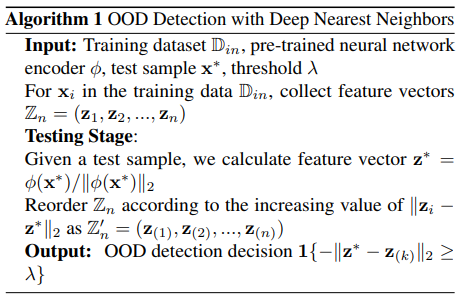

Most prior distance-based OOD detection methods assume the ID feature embeddings for each class follow a Gaussian distribution, and use Mahalanobis distance to the nearest class centroid to flag OOD samples. But this assumption often doesn't hold in practice, which makes Mahalanobis distance unreliable for OOD detection. It's also computationally expensive, since it requires inverting a covariance matrix.
In this paper, a non-parametric approach leveraging KNN is proposed, which makes no assumption about the shape of the feature distribution. After training a neural network encoder, both training and test embeddings are L2-normalized, and a test sample is flagged as OOD if its distance to the k-th nearest neighbor in the training set is larger than a threshold. This threshold is calibrated using only ID validation data, chosen so that the true positive rate on ID samples is 95% (TPR@95). The approach works best when the feature space is compact and well-separated. As a result, training with supervised contrastive loss instead of cross-entropy makes the embeddings more compact within each class and more separated across classes, enabling the KNN distance to perform better for OOD detection.

Figure: KNN-OOD Algorithm [1].